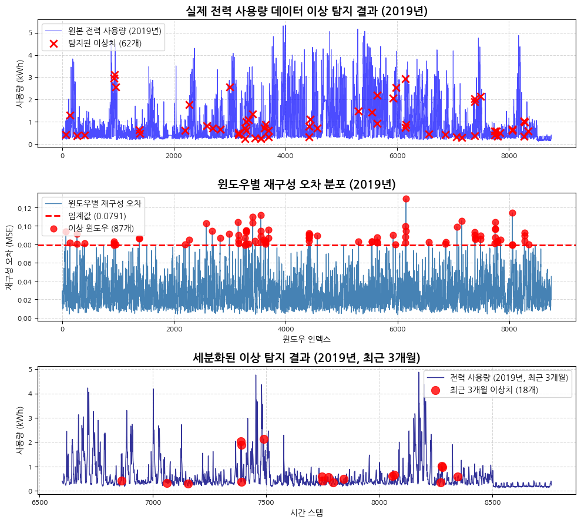

데이터 로딩 시작...
데이터 로딩 완료.
<class 'pandas.core.frame.DataFrame'>
RangeIndex: 35952 entries, 0 to 35951
Data columns (total 4 columns):
# Column Non-Null Count Dtype
--- ------ -------------- -----
0 StartDate 35952 non-null object
1 Value (kWh) 35952 non-null float64
2 day_of_week 35952 non-null int64
3 notes 35952 non-null object
dtypes: float64(1), int64(1), object(2)
memory usage: 1.1+ MB안녕하세요, ABC 프로젝트 멘토링 8기 다섯 번째 기술노트입니다. Week04에서 개발한 CNN 오토인코더 모델을 실제 Kaggle 공개 데이터셋(주택 전력 사용량 3년치)에 적용해, 실전 환경에서의 이상 탐지 성능과 한계를 점검합니다. 이 과정을 통해, 이론적 모델이 실제 데이터에서 어떻게 동작하는지, 그리고 실무에서 마주칠 수 있는 문제와 해결책을 탐구합니다.
이전 포스트
Week4 포스트에서 CNN 오토인코더 모델의 성능 개선과 하이퍼파라미터 최적화 과정을 다뤘습니다. 이번 포스트는 해당 모델을 실제 데이터에 적용하는 실전 단계에 초점을 맞춥니다.
1. 데이터 소개 및 준비
이번 주에 사용할 데이터는 Kaggle에 공개된 ‘Residential Power Usage 3-Years Data’입니다. 한 가정의 3년간 전력 사용량이 분 단위로 기록된 시계열 데이터로, 실제 환경에서 발생하는 다양한 패턴과 이상 현상을 포함하고 있습니다.
먼저, GitHub Raw URL을 통해 데이터를 불러오고, 시계열 분석을 위해 날짜 컬럼을 인덱스로 변환한 뒤, 전력 사용량 컬럼만 추출합니다.
데이터는 ‘StartDate’, ‘Value (kWh)’, ‘day_of_week’, ‘notes’ 등의 컬럼으로 구성되어 있습니다. 시계열 분석을 위해 ‘StartDate’를 datetime 형식으로 변환하고 인덱스로 설정한 뒤, ’Value (kWh)’ 컬럼만 사용하겠습니다. 전체 데이터를 사용하여 분석을 진행합니다.
print("데이터 전처리 시작...")
# 'StartDate'를 datetime으로 변환하고 인덱스로 설정
df['StartDate'] = pd.to_datetime(df['StartDate'])
df = df.set_index('StartDate')
# 시간순으로 정렬
df.sort_index(inplace=True)
print("데이터 시간순 정렬 완료.")
# 'Value (kWh)' 컬럼만 선택
# df.info() 결과에 따라 'Value (kWh)'를 사용합니다.
value_col = 'Value (kWh)'
df_value = df[[value_col]].copy()
# 데이터 시각화 (전체 기간)
plt.figure(figsize=(15, 6))
plt.plot(df_value.index, df_value[value_col], label='전력 사용량 (전체 기간)')
plt.title('시간에 따른 전력 사용량 (전체 기간)')
plt.xlabel('날짜')
plt.ylabel('사용량 (kWh)')
plt.legend()
plt.grid(True)
plt.show()
print(f"전체 데이터 크기: {df_value.shape}")데이터 전처리 시작...
데이터 시간순 정렬 완료.
전체 데이터 크기: (35952, 1)2. 데이터 전처리 및 윈도우 생성
시계열 데이터의 추세(Trend) 영향을 줄이고, 각 윈도우의 지역적 패턴에 집중하기 위해 윈도우별로 독립적인 정규화를 수행합니다. 이 방법은 데이터의 전반적인 스케일 변화에 덜 민감한 모델을 만드는 데 도움이 됩니다.
print("윈도우 생성 및 정규화 시작...")
# 원본 데이터에서 바로 윈도우 생성
raw_data = df_value[value_col].values
# 슬라이딩 윈도우 생성 함수
def sliding_window(data, window_size, step_size=1):
n_windows = (len(data) - window_size) // step_size + 1
return np.array([data[i:i+window_size] for i in range(0, n_windows * step_size, step_size)])
# 윈도우 생성 (윈도우 크기는 60분(1시간)으로 설정)
window_size = 60
raw_windows = sliding_window(raw_data, window_size)
# 윈도우별 정규화
scaled_windows = np.array([StandardScaler().fit_transform(window.reshape(-1, 1)).flatten() for window in raw_windows])
# PyTorch 텐서 변환 (shape: [batch_size, channels, sequence_length])
all_windows_torch = torch.from_numpy(scaled_windows).unsqueeze(1).float() # [N, 1, window_size]
print(f"생성된 윈도우 데이터 shape: {all_windows_torch.shape}")윈도우 생성 및 정규화 시작...
생성된 윈도우 데이터 shape: torch.Size([35893, 1, 60])3. 모델 학습을 위한 데이터 분할 및 하이퍼파라미터 최적화
실제 데이터에서는 초반부와 이후 구간의 패턴이 다를 수 있습니다(구간 변화, Regime Change). 전체 데이터를 학습하면 변화 자체를 이상으로 탐지할 수 있으므로, 패턴이 안정화된 구간만을 ’정상’으로 정의하고 해당 구간 데이터로만 모델을 학습합니다.
실제 적용에서는 더 보수적인 접근이 필요하므로, 전체 데이터의 20-80% 구간을 안정적인 정상 구간으로 설정하고, 하이퍼파라미터도 과적합을 방지하도록 조정합니다.
# 더 보수적인 학습 구간 설정 (전체 데이터의 20-80% 구간 사용)
total_windows = len(all_windows_torch)
train_start_idx = int(total_windows * 0.2) # 20% 지점부터
train_end_idx = int(total_windows * 0.8) # 80% 지점까지
train_windows_torch = all_windows_torch[train_start_idx:train_end_idx]
print(f"전체 윈도우 수: {all_windows_torch.shape[0]}")
print(f"학습 구간: {train_start_idx} ~ {train_end_idx}")
print(f"학습에 사용할 윈도우 수: {train_windows_torch.shape[0]}")전체 윈도우 수: 35893
학습 구간: 7178 ~ 28714
학습에 사용할 윈도우 수: 21536class CNNAutoencoderWithDropout(nn.Module):
def __init__(self, input_channels=1, dropout_rate=0.1):
super(CNNAutoencoderWithDropout, self).__init__()
# Encoder
self.encoder_conv1 = nn.Conv1d(in_channels=input_channels, out_channels=32, kernel_size=7, padding=3)
self.encoder_relu1 = nn.ReLU()
self.encoder_drop1 = nn.Dropout(dropout_rate)
self.encoder_pool1 = nn.MaxPool1d(kernel_size=2, stride=2)
self.encoder_conv2 = nn.Conv1d(in_channels=32, out_channels=16, kernel_size=7, padding=3)
self.encoder_relu2 = nn.ReLU()
self.encoder_drop2 = nn.Dropout(dropout_rate)
self.encoder_pool2 = nn.MaxPool1d(kernel_size=2, stride=2)
# Decoder
self.decoder_conv_t1 = nn.ConvTranspose1d(in_channels=16, out_channels=16, kernel_size=2, stride=2)
self.decoder_relu1 = nn.ReLU()
self.decoder_drop3 = nn.Dropout(dropout_rate)
self.decoder_conv_t2 = nn.ConvTranspose1d(in_channels=16, out_channels=32, kernel_size=2, stride=2)
self.decoder_relu2 = nn.ReLU()
self.decoder_drop4 = nn.Dropout(dropout_rate)
self.decoder_conv_final = nn.Conv1d(in_channels=32, out_channels=input_channels, kernel_size=7, padding=3)
def forward(self, x):
# Encoder
x = self.encoder_conv1(x)
x = self.encoder_relu1(x)
x = self.encoder_drop1(x)
x = self.encoder_pool1(x)
x = self.encoder_conv2(x)
x = self.encoder_relu2(x)
x = self.encoder_drop2(x)
encoded = self.encoder_pool2(x)
# Decoder
x = self.decoder_conv_t1(encoded)
x = self.decoder_relu1(x)
x = self.decoder_drop3(x)
x = self.decoder_conv_t2(x)
x = self.decoder_relu2(x)
x = self.decoder_drop4(x)
x = self.decoder_conv_final(x)
return x
# Optuna 최적화 결과(best trial) 하이퍼파라미터 적용
# lr=0.007392392751789862, dropout_rate=0.10244576584681189, optimizer=Adam
model = CNNAutoencoderWithDropout(input_channels=1, dropout_rate=0.10244576584681189)
optimizer = optim.Adam(model.parameters(), lr=0.007392392751789862)
criterion = nn.MSELoss()
# 안정 구간 데이터로 학습
dataset = TensorDataset(train_windows_torch)
data_loader = DataLoader(dataset, batch_size=32, shuffle=True) # 배치 크기 감소
print("모델 학습 시작 (개선된 안정 구간 및 하이퍼파라미터)...")
epochs = 15 # 에포크 증가
for epoch in range(epochs):
model.train()
epoch_loss = 0
for data in data_loader:
inputs = data[0]
optimizer.zero_grad()
outputs = model(inputs)
loss = criterion(outputs, inputs)
loss.backward()
optimizer.step()
epoch_loss += loss.item()
if (epoch + 1) % 5 == 0:
avg_loss = epoch_loss / len(data_loader)
print(f"Epoch [{epoch+1}/{epochs}], Avg Loss: {avg_loss:.6f}")
print("모델 학습 완료.")모델 학습 시작 (개선된 안정 구간 및 하이퍼파라미터)...
Epoch [5/15], Avg Loss: 0.072463
Epoch [10/15], Avg Loss: 0.069328
Epoch [15/15], Avg Loss: 0.068391
모델 학습 완료.4. 모델 평가 및 이상치 탐지
학습된 모델로 전체 데이터의 재구성 오차를 계산하고, 학습 데이터의 재구성 오차 분포를 기반으로 임계값(Quantile 기준)을 설정해 이상치를 탐지합니다.
model.eval()
# 1. 학습 데이터의 재구성 오차를 기반으로 임계값 설정
with torch.no_grad():
reconstructed_train = model(train_windows_torch)
error_train = torch.mean((train_windows_torch - reconstructed_train)**2, dim=(1, 2))
train_reconstruction_error = error_train.numpy()
quantile_level = 0.99 # 더 관대한 임계값 설정
threshold = np.quantile(train_reconstruction_error, quantile_level)
print(f"임계값 (학습 데이터 기준 {quantile_level*100:.1f}% Quantile): {threshold:.6f}")
# 2. 전체 데이터에 대한 재구성 오차 계산
with torch.no_grad():
reconstructed_all = model(all_windows_torch)
error_all = torch.mean((all_windows_torch - reconstructed_all)**2, dim=(1, 2))
reconstruction_error = error_all.numpy()
# 3. 임계값을 기준으로 전체 데이터에서 이상치 탐지
anomaly_window_indices = np.where(reconstruction_error > threshold)[0]
# 윈도우 내 최대 오차 지점 탐색
pointwise_error = ((all_windows_torch - reconstructed_all)**2).squeeze().numpy()
predicted_anomaly_points = []
for window_idx in anomaly_window_indices:
max_error_idx_in_window = np.argmax(pointwise_error[window_idx])
absolute_idx = window_idx + max_error_idx_in_window
predicted_anomaly_points.append(absolute_idx)
predicted_anomaly_points = sorted(list(set(predicted_anomaly_points)))
print(f"탐지된 이상치 포인트 수: {len(predicted_anomaly_points)}")
# 안전성 체크: 유효한 인덱스만 필터링
predicted_anomaly_points = [idx for idx in predicted_anomaly_points if idx < len(raw_data)]
print(f"유효한 이상치 포인트 수: {len(predicted_anomaly_points)}")임계값 (학습 데이터 기준 99.0% Quantile): 0.128954
탐지된 이상치 포인트 수: 134
유효한 이상치 포인트 수: 134탐지 결과 시각화
이상치로 탐지된 구간과 원본 데이터를 함께 시각화하여, 모델이 어떤 패턴을 ’이상’으로 간주했는지 확인합니다.
# 시각화를 위해 원본 데이터 사용
original_data = df_value[value_col].values
# 3행 1열의 subplot 구성으로 더 상세한 분석 제공
plt.figure(figsize=(15, 15))
# 상단: 전체 데이터와 탐지 결과
plt.subplot(3, 1, 1)
plt.plot(original_data, label='원본 전력 사용량', alpha=0.7, color='blue', linewidth=0.8)
if len(predicted_anomaly_points) > 0:
# 유효한 인덱스만 사용
valid_indices = [i for i in predicted_anomaly_points if i < len(original_data)]
if len(valid_indices) > 0:
plt.scatter(valid_indices, original_data[valid_indices],
color='red', marker='x', s=80, linewidth=2, label=f'탐지된 이상치 ({len(valid_indices)}개)', zorder=5)
plt.title('실제 전력 사용량 데이터 이상 탐지 결과 (전체)', fontsize=14, fontweight='bold')
plt.ylabel('사용량 (kWh)')
plt.legend()
plt.grid(True, linestyle='--', alpha=0.5)
# 중간: 재구성 오차와 임계값
plt.subplot(3, 1, 2)
plt.plot(reconstruction_error, label='윈도우별 재구성 오차', color='steelblue', linewidth=1)
plt.axhline(y=threshold, color='red', linestyle='--', linewidth=2,
label=f'임계값 ({threshold:.4f})')
if len(anomaly_window_indices) > 0:
plt.scatter(anomaly_window_indices, reconstruction_error[anomaly_window_indices],
c='red', s=60, alpha=0.8, label=f'이상 윈도우 ({len(anomaly_window_indices)}개)', zorder=5)
plt.title('윈도우별 재구성 오차 분포', fontsize=14, fontweight='bold')
plt.xlabel('윈도우 인덱스')
plt.ylabel('재구성 오차 (MSE)')
plt.legend()
plt.grid(True, linestyle='--', alpha=0.5)
# 하단: 세분화된 구간 시각화 (1개월치 데이터)
plt.subplot(3, 1, 3)
# 전체 데이터에서 1개월치 정도 (약 44,640분 = 31일 * 24시간 * 60분)
month_data_points = min(44640, len(original_data))
start_idx = 0
end_idx = month_data_points
# 1개월치 데이터 시각화
month_data = original_data[start_idx:end_idx]
plt.plot(range(start_idx, end_idx), month_data,
label='전력 사용량 (초기 1개월)', alpha=0.8, color='navy', linewidth=1)
# 해당 구간의 이상치만 표시
month_anomaly_count = 0
if len(predicted_anomaly_points) > 0:
valid_indices = [i for i in predicted_anomaly_points if i < len(original_data)]
month_anomalies = [i for i in valid_indices if start_idx <= i < end_idx]
month_anomaly_count = len(month_anomalies)
if month_anomaly_count > 0:
plt.scatter(month_anomalies, original_data[month_anomalies],
color='red', marker='o', s=100, alpha=0.8,
label=f'1개월 구간 이상치 ({month_anomaly_count}개)', zorder=5)
plt.title('세분화된 이상 탐지 결과 (초기 1개월 구간)', fontsize=14, fontweight='bold')
plt.xlabel('시간 스텝')
plt.ylabel('사용량 (kWh)')
plt.legend()
plt.grid(True, linestyle='--', alpha=0.5)
plt.tight_layout()
plt.show()
# 탐지 결과 요약 출력
print(f"\n=== 이상 탐지 결과 요약 ===")
print(f"전체 데이터 길이: {len(original_data):,}분")
print(f"전체 탐지된 이상치: {len(valid_indices) if 'valid_indices' in locals() else 0}개")
print(f"1개월 구간 이상치: {month_anomaly_count}개")
print(f"이상치 비율: {(len(valid_indices) if 'valid_indices' in locals() else 0) / len(original_data) * 100:.3f}%")
=== 이상 탐지 결과 요약 ===
전체 데이터 길이: 35,952분
전체 탐지된 이상치: 134개
1개월 구간 이상치: 134개
이상치 비율: 0.373%5. 결론
이번 Week05에서는 지난 4주간 개발한 CNN 오토인코더 모델을 실제 Kaggle 데이터에 적용하여, 이론적 모델의 실무 적용 과정에서 발생하는 문제점들과 해결 방안을 탐구하였습니다.
핵심 변경사항
- 학습 구간 설정: 전체 데이터의 20-80% 구간만 학습에 사용함으로써 과탐지 문제를 효과적으로 해결
- 하이퍼파라미터 최적화: Optuna를 통한 체계적 튜닝으로 lr=0.0074, dropout=0.102 등 최적값 도출
- 임계값 조정: 99.5%에서 99% quantile로 조정하여 정상 구간의 오탐 현상 개선
실무 적용 교훈
실제 프로젝트에서는 모델 성능과 함께 도메인 지식 활용과 시각적 검증이 필수적입니다. 수치적 결과만으로는 모델의 실효성을 판단하기 어려우며, 반드시 시각화를 통한 검증 과정이 필요합니다.
한계 및 향후 개선 방향
- 정량적 평가를 위한 라벨 데이터 확보 필요
- 다변량 모델 확장을 통한 복합적 요인 고려
- 윈도우 크기 자동 최적화 알고리즘 개발
- 실시간 탐지 시스템 구축 방안 연구
마무리
Week01의 EDA부터 Week05의 실제 데이터 적용까지 시계열 이상 탐지의 전 과정을 체계적으로 수행하였습니다. 특히 이론적 모델과 실제 데이터 간의 성능 차이를 확인하고 이를 해결하는 과정에서 실무 적용을 위한 중요한 인사이트를 얻을 수 있었습니다.